Creates an interaction plot of EMMs based on a fitted model and a simple formula specification.
Usage
emmip(object, formula, ...)
# Default S3 method
emmip(object, formula, type, CIs = FALSE, PIs = FALSE,
style, engine = get_emm_option("graphics.engine"), plotit = TRUE,
nesting.order = FALSE, ...)
emmip_ggplot(emms, style = "factor", dodge = 0.2, xlab = labs$xlab,
ylab = labs$ylab, tlab = labs$tlab, facetlab = "label_context", scale,
dotarg = list(shape = "circle"), linearg = list(linetype = "solid"),
CIarg = list(alpha = 0.4), PIarg = list(alpha = 0.25), ...)
emmip_lattice(emms, style = "factor", xlab = labs$xlab, ylab = labs$ylab,
tlab = labs$tlab, pch = c(1, 2, 6, 7, 9, 10, 15:20), lty = 1,
col = NULL, ...)Arguments
- object
An object of class
emmGrid, or a fitted model of a class supported by the emmeans package- formula
Formula of the form
trace.factors ~ x.factors | by.factors. The EMMs are plotted againstx.factorfor each level oftrace.factors.by.factorsis optional, but if present, it determines separate panels. Each element of this formula may be a single factor in the model, or a combination of factors using the*operator.- ...
Additional arguments passed to
emmeans(whenobjectis not already anemmGridobject),predict.emmGrid,emmip_ggplot, oremmip_lattice.- type
As in
predict.emmGrid, this determines whether we want to inverse-transform the predictions (type = "response") or not (any other choice). The default is"link", unless the"predict.type"option is in force; seeemm_options. In addition, the user may specifytype = "scale"to create a transformed scale for the vertical axis based onobject's response transformation or link function.- CIs
Logical value. If
TRUE, confidence intervals (or HPD intervals for Bayesian models) are added to the plot (works only withengine = "ggplot").- PIs
Logical value. If
TRUE, prediction intervals are added to the plot (works only withengine = "ggplot"). This is allowed only if the underlying model family is"gaussian". If bothCIsandPIsareTRUE, the prediction intervals will be somewhat longer, lighter, and thinner than the confidence intervals. Additional parameters topredict.emmGrid(e.g.,sigma) may be passed via.... For Bayesian models, PIs requirefrequentist = TRUEand a value forsigma.- style
Optional character value. This has an effect only when the horizontal variable is a single numeric variable. If
styleis unspecified or"numeric", the horizontal scale will be numeric and curves are plotted using lines (and no symbols). Withstyle = "factor", the horizontal variable is treated as the levels of a factor (equally spaced along the horizontal scale), and curves are plotted using lines and symbols. When the horizontal variable is character or factor, or a combination of more than one predictor,"factor"style is always used.- engine
Character value matching
"ggplot"(default),"lattice", or"none". The graphics engine to be used to produce the plot. These require, respectively, the ggplot2 or lattice package to be installed. Specifying"none"is equivalent to settingplotit = FALSE.- plotit
Logical value. If
TRUE, a graphical object is returned; ifFALSE, a data.frame is returned containing all the values used to construct the plot.- nesting.order
Logical value. If
TRUE, factors that are nested are presented in order according to their nesting factors, even if those nesting factors are not present informula. IfFALSE, only the variables informulaare used to order the variables.- emms
A
data.framecreated by callingemmipwithplotit = FALSE. Certain variables and attributes are expected to exist in this data frame; see the section detailing the rendering functions.- dodge
Numerical amount passed to
ggplot2::position_dodgeby which points and intervals are offset so they do not collide.- xlab, ylab, tlab
Character labels for the horizontal axis, vertical axis, and traces (the different curves), respectively. The
emmipfunction generates these automatically and provides therm via thelabsattribute, but the user may override these if desired.- facetlab
Labeller for facets (when by variables are in play). Use
"label_value"to show just the factor levels, or"label_both"to show both the factor names and factor levels. The default of"label_context"decides which based on how manybyfactors there are. See the documentation forggplot2::label_context.- scale
If not missing, an object of class
scales::transspecifying a (usually) nonlinear scaling for the vertical axis. For example,scales = scales::log_trans()specifies a logarithmic scale. For fine-tuning purposes, additional arguments toggplot2::scale_y_continuousmay be included in....- dotarg
listof arguments passed togeom_pointto customize appearance of points. If this includesshapeand it is of length greater than 1, it is interpreted as a shape palette instead.- linearg
listof arguments passed togeom_lineto customize appearance of lines. If this includeslinetypeand it is of length greater than 1, it is interpreted as a linetype.- CIarg, PIarg
lists of arguments passed togeom_linerangeto customize appearance of intervals. (Note: thelinetypeaesthetic defaults to"solid"under the hood)- pch
(Lattice only) The plotting characters to use for each group (i.e., levels of
trace.factors). They are recycled as needed.- lty
(Lattice only) The line types to use for each group. Recycled as needed.
- col
With
emmip_ggplot, this addscolor = col(notcolour) to all of the*arglists. This is intended for setting a common color for everything, such as a black-and-white plot. Withemmip_lattice,colspecifies the colors to use for each group, recycled as needed. If not specified, the default trellis colors are used.
Value
If plotit = FALSE, a data.frame (actually, a
summary_emm object) with the table of EMMs that would be plotted.
The variables plotted are named xvar and yvar, and the trace
factor is named tvar. This data frame has an added "labs"
attribute containing the labels xlab, ylab, and tlab
for these respective variables. The confidence limits are also
included, renamed LCL and UCL.
If plotit = TRUE, the function
returns an object of class "ggplot" or a "trellis", depending
on engine.
Note
Conceptually, this function is equivalent to
interaction.plot where the summarization function is thought
to return the EMMs.
Details
If object is a fitted model, emmeans is called with an
appropriate specification to obtain estimated marginal means for each
combination of the factors present in formula (in addition, any
arguments in ... that match at, trend,
cov.reduce, or fac.reduce are passed to emmeans).
Otherwise, if object is an emmGrid object, its first element is
used, and it must contain one estimate for each combination of the factors
present in formula.
Rendering functions
The functions emmip_ggplot and emmip_lattice
are called when plotit == TRUE to render the plots;
but they may also be called later on an object saved via plotit = FALSE
(or engine = "none"). The functions require that emms contains variables
xvar, yvar, and tvar, and attributes "labs" and "vars".
Confidence intervals are plotted if variables LCL and UCL exist;
and prediction intervals are plotted if LPL and UPL exist.
Finally, it must contain the variables named in attr(emms, "vars").
In emmip_ggplot, colors, linetypes, and shapes are all assigned to
groups (according to tvar) unless overridden. So, for example, one may
have different symbols for each group by simply specifying dotarg = list().
Examples
#--- Three-factor example
noise.lm = lm(noise ~ size * type * side, data = auto.noise)
# Separate interaction plots of size by type, for each side
emmip(noise.lm, type ~ size | side)
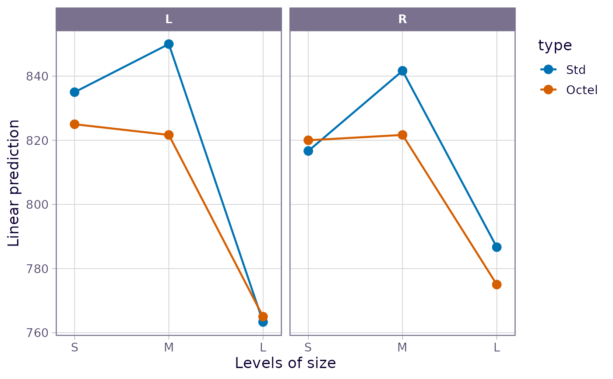
# One interaction plot, using combinations of size and side as the x factor
# ... with added confidence intervals and some formatting changes
emmip(noise.lm, type ~ side * size, CIs = TRUE,
CIarg = list(linewidth = 1.5, alpha = 1, color = "orange"),
dotarg = list(size = 2, shape = "square", color = "black"))
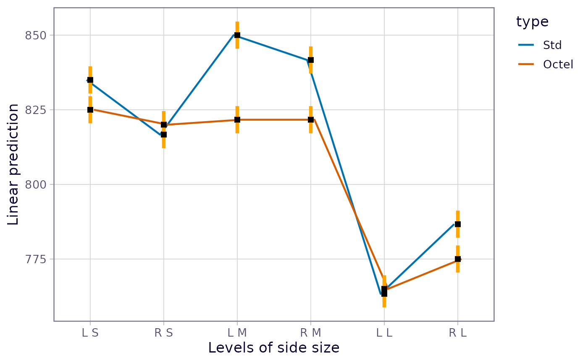
# Same using legacy theme
with_emm_options(gg.theme = 1,
emmip(noise.lm, type ~ side * size, CIs = TRUE,
CIarg = list(linewidth = 1.5, alpha = 1, color = "orange"),
dotarg = list(size = 2, shape = "square", color = "black")))
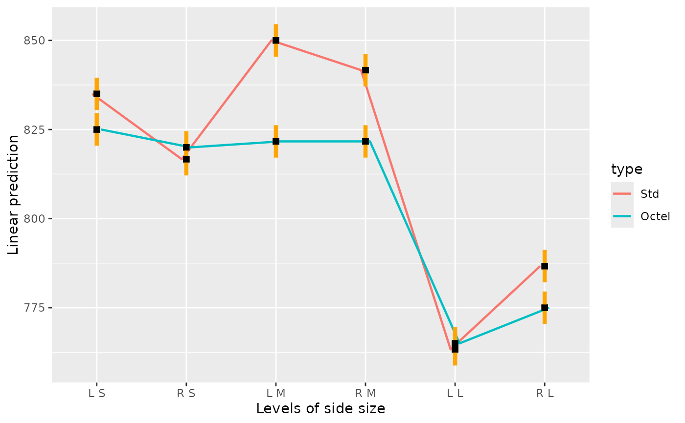
# Create a black-and-white version of above with different linetypes
# (Let the linetypes and symbols default to the palette)
emmip(noise.lm, type ~ side * size, CIs = TRUE, col = "black",
linearg = list(), dotarg = list(size = 2), CIarg = list(alpha = 1)) +
ggplot2::theme_bw()
 # One interaction plot using combinations of type and side as the trace factor
emmip(noise.lm, type * side ~ size)
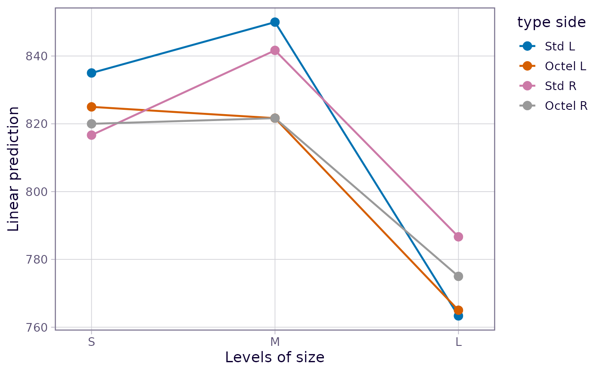
# Individual traces in panels
emmip(noise.lm, ~ size | type * side)
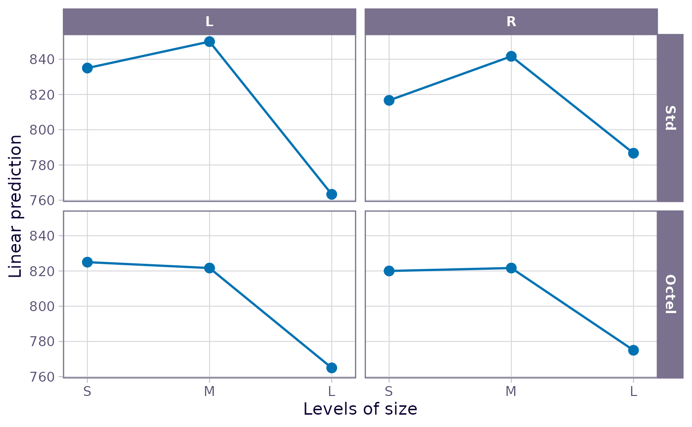
# Example for the 'style' argument
fib.lm = lm(strength ~ machine * sqrt(diameter), data = fiber)
fib.rg = ref_grid(fib.lm, at = list(diameter = c(12, 14, 15, 25, 36)))
emmip(fib.rg, machine ~ diameter) # curves (because diameter is numeric)
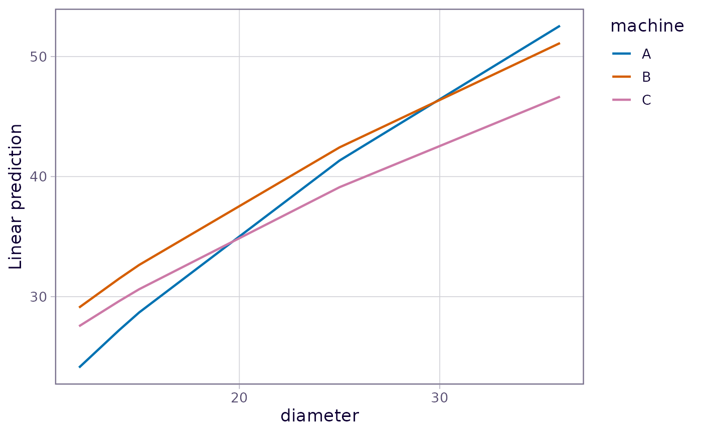
emmip(fib.rg, machine ~ diameter, style = "factor") # points and lines
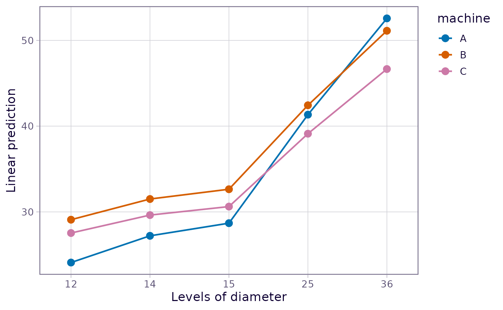
# For an example using extra ggplot2 code, see 'vignette("messy-data")',
# in the section on nested models.
### Options with transformations or link functions
neuralgia.glm <- glm(Pain ~ Treatment * Sex + Age, family = binomial(),
data = neuralgia)
# On link scale:
emmip(neuralgia.glm, Treatment ~ Sex)
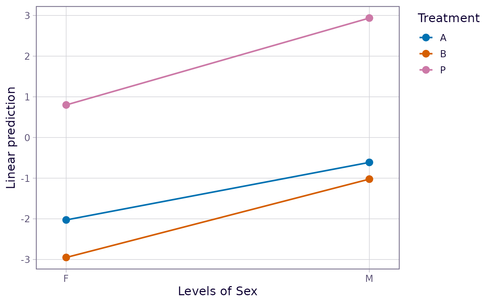
# On response scale:
emmip(neuralgia.glm, Treatment ~ Sex, type = "response")
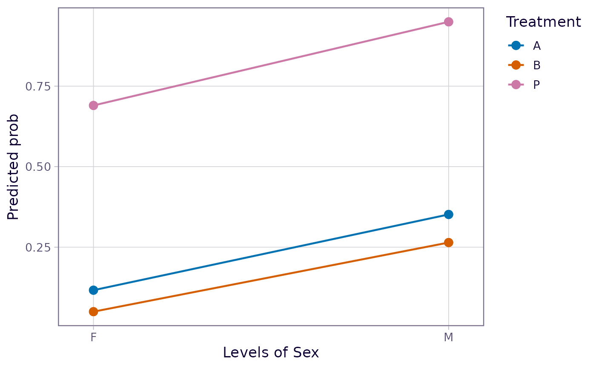
# With transformed axis scale and custom scale divisions
emmip(neuralgia.glm, Treatment ~ Sex, type = "scale",
breaks = seq(0.10, 0.90, by = 0.10))
# One interaction plot using combinations of type and side as the trace factor
emmip(noise.lm, type * side ~ size)
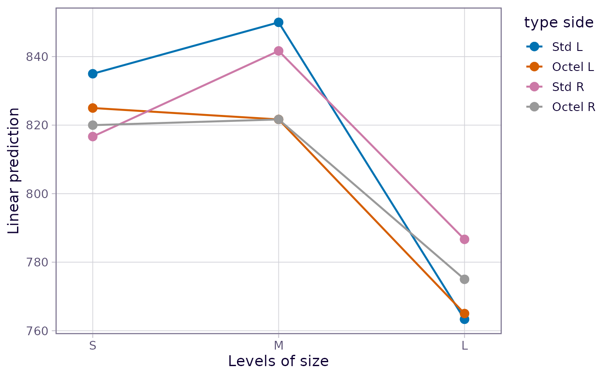
# Individual traces in panels
emmip(noise.lm, ~ size | type * side)
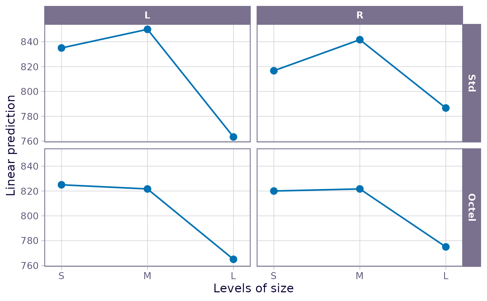
# Example for the 'style' argument
fib.lm = lm(strength ~ machine * sqrt(diameter), data = fiber)
fib.rg = ref_grid(fib.lm, at = list(diameter = c(12, 14, 15, 25, 36)))
emmip(fib.rg, machine ~ diameter) # curves (because diameter is numeric)
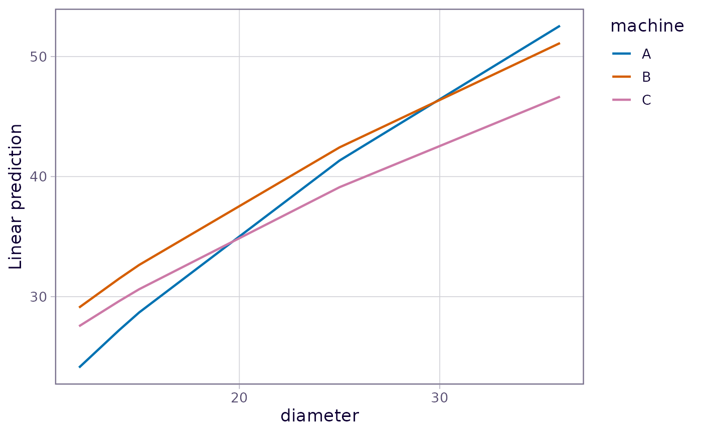
emmip(fib.rg, machine ~ diameter, style = "factor") # points and lines
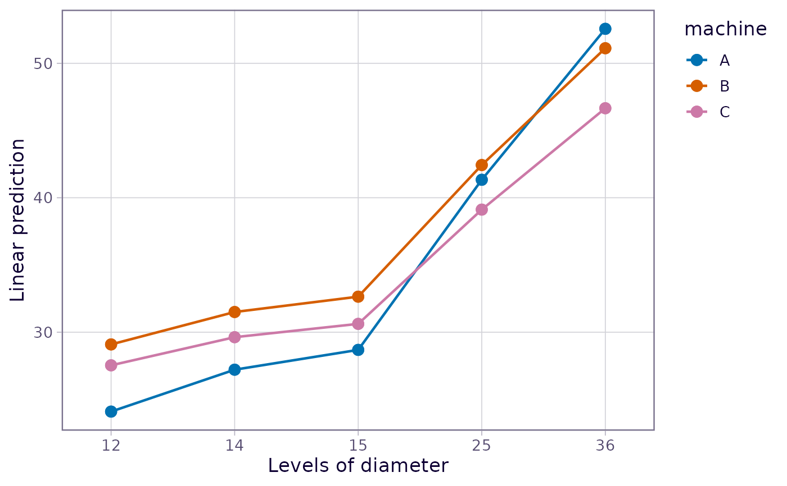
# For an example using extra ggplot2 code, see 'vignette("messy-data")',
# in the section on nested models.
### Options with transformations or link functions
neuralgia.glm <- glm(Pain ~ Treatment * Sex + Age, family = binomial(),
data = neuralgia)
# On link scale:
emmip(neuralgia.glm, Treatment ~ Sex)
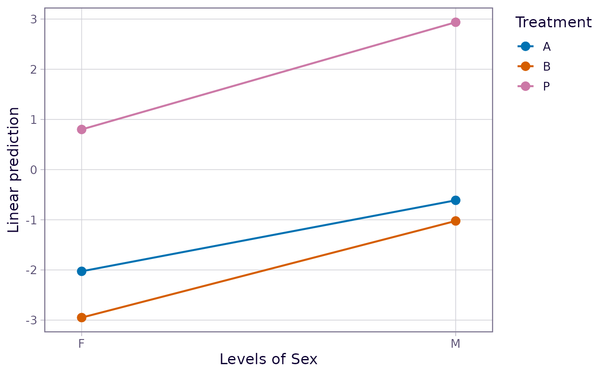
# On response scale:
emmip(neuralgia.glm, Treatment ~ Sex, type = "response")
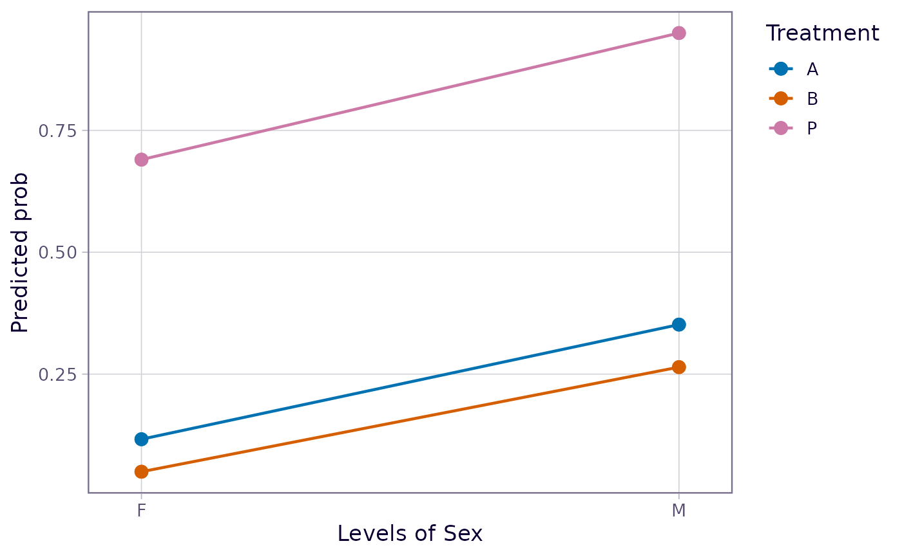
# With transformed axis scale and custom scale divisions
emmip(neuralgia.glm, Treatment ~ Sex, type = "scale",
breaks = seq(0.10, 0.90, by = 0.10))